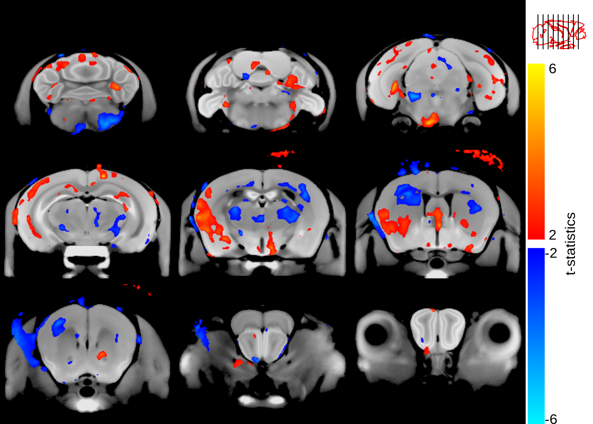
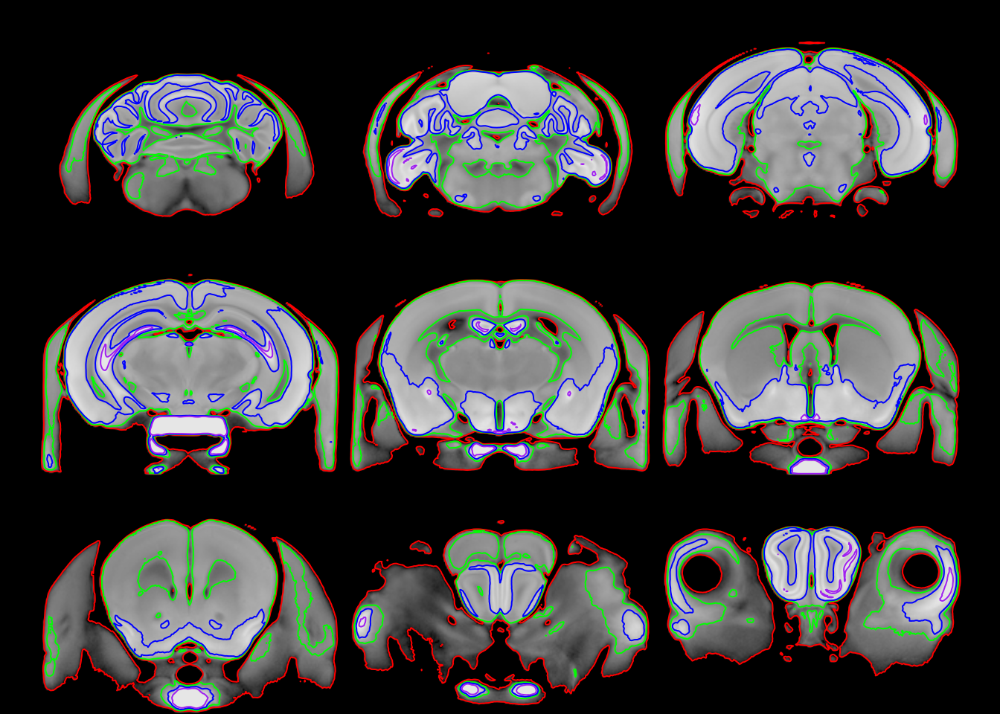
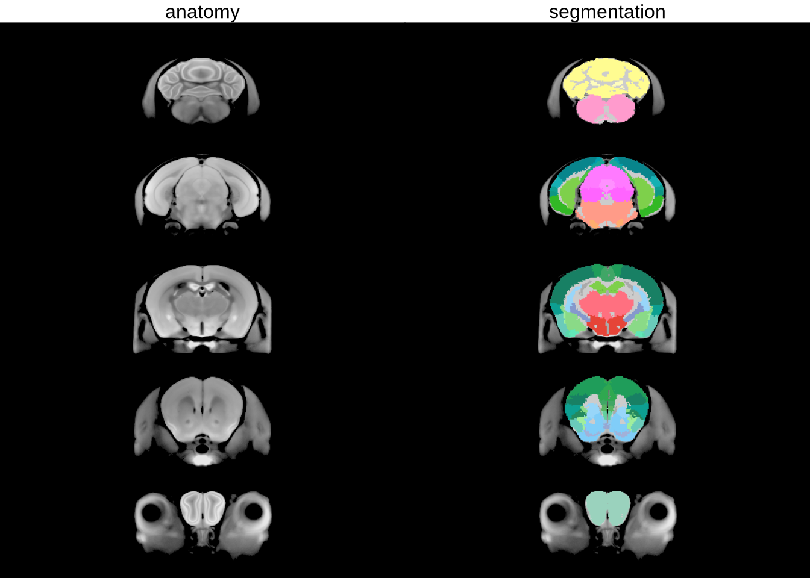
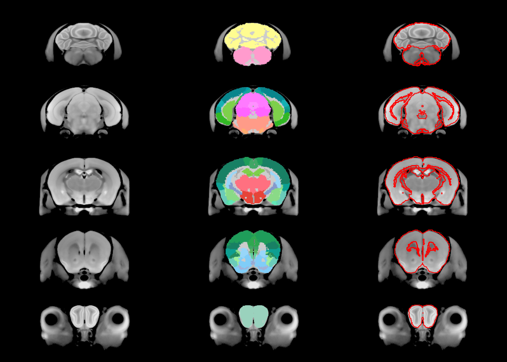
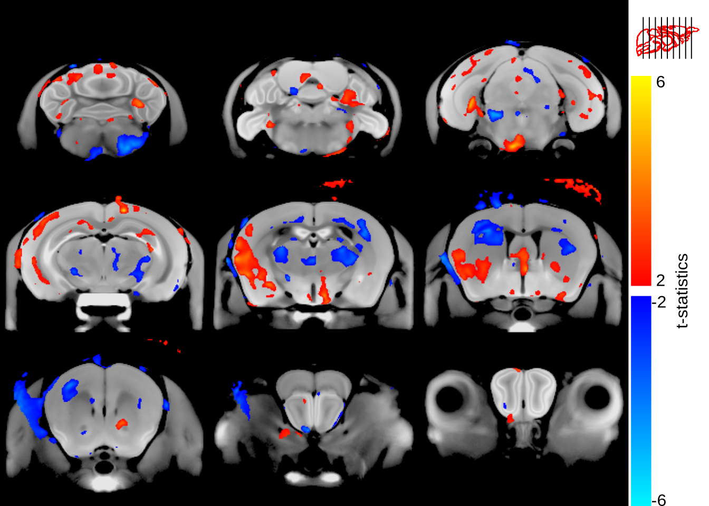

library(tidyverse)
gfw2 <- read_csv("exercise-gfw2.csv")Brain outlines are used routinely in MRIcrotome sliceSeries for showing slice locations, plus they can have value in their own right for replacing the full grey-scale background with an outline. By default the outlines take a bit of trial and error to find the right isointensity lines; in some cases no truly good outlines can be generated. Here I will show an alternate way of generating an outline based on having a hierarchical segmentation present.
1 Setting up
First we’ll load an existing dataset and generate the hierarchical segmentation representations. For those at Oxford using the BMRC cluster you can follow along, for anyone else you’ll have to substitute your own dataset.
First step, read the information about the scans.
So at this point we have the gf variable containing info about all our files, and gfw2 subsetting them just to the two week timepoint (this is from mice being given access to an exercise wheel).
Next we’ll load the final non-linear average, the segmented final nonlinear average, and build all the volumes.
library(RMINC)
# read the anatomy and labels
nlin <- mincArray(mincGetVolume("/well/lerch/users/yrf023/plasticity/plasticity-2023-03-10_nlin/plasticity-2023-03-10-nlin-3.mnc"))
labels <- mincArray(mincGetVolume("/well/lerch/users/yrf023/plasticity/plasticity-2023-03-10_nlin/plasticity-2023-03-10-nlin-3/plasticity-2023-03-10-nlin-3_voted.mnc"))
# get all the volumes
allvolsw2 <- anatGetAll(gfw2$labels, defs="/well/lerch/shared/tools/atlases/Dorr_2008_Steadman_2013_Ullmann_2013/mappings/Dorr_2008_Steadman_2013_Ullmann_2013_mapping_of_labels.csv", method="labels")And now we put the labelled atlas into it’s hierarchy.
# there's a warning that spews everywhere that needs to be fixed in RMINC, but causes no harm.
# so for now I'll suppress these warnings
suppressWarnings({
hdefs <- makeMICeDefsHierachical("/well/lerch/shared/tools/atlases/Dorr_2008_Steadman_2013_Ullmann_2013/mappings/Dorr_2008_Steadman_2013_Ullmann_2013_mapping_of_labels.csv", "/well/lerch/shared/tools/atlases/Allen_Brain/Allen_hierarchy_definitions.json")
hvolsw2 <- addVolumesToHierarchy(hdefs, allvolsw2)
})2 A basic example
Let’s do a basic example of running a simple linear model, showing it on a brain alongside a slice indicator and legend.
library(MRIcrotome)
Attaching package: 'MRIcrotome'The following object is masked from 'package:graphics':
legendlibrary(grid)
# a simple linear model against group
vs <- mincLm(reljacs ~ group, gfw2, mask = "/well/lerch/users/yrf023/plasticity/plasticity-2023-03-10_nlin/plasticity-2023-03-10-nlin-3_mask.mnc")Method: lm
Number of volumes: 18
Volume sizes: 161 319 210
N: 18 P: 2
In slice
0 1 2 3 4 5 6 7 8 9 10 11 12 13 14 15 16 17 18 19 20 21 22 23 24 25 26 27 28 29 30 31 32 33 34 35 36 37 38 39 40 41 42 43 44 45 46 47 48 49 50 51 52 53 54 55 56 57 58 59 60 61 62 63 64 65 66 67 68 69 70 71 72 73 74 75 76 77 78 79 80 81 82 83 84 85 86 87 88 89 90 91 92 93 94 95 96 97 98 99 100 101 102 103 104 105 106 107 108 109 110 111 112 113 114 115 116 117 118 119 120 121 122 123 124 125 126 127 128 129 130 131 132 133 134 135 136 137 138 139 140 141 142 143 144 145 146 147 148 149 150 151 152 153 154 155 156 157 158 159 160
Done# show it as a 3 by 3 slice series
sliceSeries(nrow=3, ncol=3, begin=60, end=250) %>%
anatomy(nlin, low=700, high=1400) %>%
overlay(mincArray(vs, "tvalue-grouprunning"), low=2, high=6, symmetric=T) %>%
legend("t-statistics") %>%
contourSliceIndicator(nlin, levels=c(700, 1400)) %>%
draw()
So that looks roughly right - the slice indicator, at the top right, gives a pretty good idea of where the brain is located. But it’s not great; let’s try a few different contours to see what might look better.
sliceSeries(nrow=3, ncol=3, begin=60, end=250) %>%
anatomy(nlin, low=700, high=1400) %>%
contours(nlin, levels=c(700, 900, 1100, 1400), col = c("red", "green", "blue", "purple")) %>%
draw()
Lots of fiddling could be done getting the exact right intensity contours, but it’ll be a challenge to get it just right.
3 Contours based on segmentations
So here’s the trick - the perfect outline is inherently in our segmentation. First, let’s view the segmentation
sliceSeries(nrow=5, ncol=1, begin=60, end=250) %>%
anatomy(nlin, low=700, high=1400) %>%
addtitle("anatomy") %>%
sliceSeries() %>%
anatomy() %>%
overlay(hanatToVolume(hvolsw2, labels, "color_hex_triplet"), low=0, high=1) %>%
addtitle("segmentation") %>%
draw()
Now the key part here is that the labels are in a hierarchy. A clean outline could thus be taken if we use just the first parts of that hierarchy:
library(data.tree)
# create a copy of the hierarchical tree
hdefs2 <- Clone(hvolsw2)
# and prune it to just the first four levels
hdefs2$Prune(function(x) x$level<4)Warning: 'hdefs2$Prune' is deprecated.
Use 'Prune(node, ...)' instead.
See help("Deprecated")[1] 495# print it to see what it looks like
print(hdefs2, limit=Inf) levelName
1 root2
2 <U+00A6>--Basic cell groups and regions
3 <U+00A6> <U+00A6>--Cerebrum
4 <U+00A6> <U+00A6>--Brain stem
5 <U+00A6> <U+00B0>--Cerebellum
6 <U+00A6>--fiber tracts
7 <U+00A6> <U+00A6>--cranial nerves
8 <U+00A6> <U+00A6>--medial forebrain bundle system
9 <U+00A6> <U+00A6>--cerebellum related fiber tracts
10 <U+00A6> <U+00A6>--lateral forebrain bundle system
11 <U+00A6> <U+00B0>--extrapyramidal fiber systems
12 <U+00B0>--ventricular systems
13 <U+00A6>--cerebral aqueduct
14 <U+00A6>--fourth ventricle
15 <U+00A6>--lateral ventricle
16 <U+00B0>--third ventricle Now create an outline based on this pruned hierarchy
sliceSeries(nrow=5, ncol=1, begin=60, end=250) %>%
anatomy(nlin, low=700, high=1400) %>%
sliceSeries() %>%
anatomy() %>%
overlay(hanatToVolume(hvolsw2, labels, "color_hex_triplet"), low=0, high=1) %>%
sliceSeries() %>% anatomy() %>%
contours(hanatToVolume(hdefs2, labels, "position"), levels=c(0.5, 1.5, 2.5, 3.5), col="red") %>%
draw()
And there you have an almost perfect outline of the brain. So let’s recreate that earlier figure with the cleaner outline:
sliceSeries(nrow=3, ncol=3, begin=60, end=250) %>%
anatomy(nlin, low=700, high=1400) %>%
overlay(mincArray(vs, "tvalue-grouprunning"), low=2, high=6, symmetric=T) %>%
legend("t-statistics") %>%
contourSliceIndicator(hanatToVolume(hdefs2, labels, "position"), levels=c(0.5, 1.5, 2.5, 3.5)) %>%
draw()
Voila.